5月31日，我捧着儿童节的礼物，下午3点，早早地到了第三极8楼等着办手续。手机上收到一条推送，开始办理离职还有半小时，老东家的内部消息推送一直做得很好。一个四万多人的企业，能够一直屹立在互联网的风口，这些小细节大概是必须的了。
3点半整，我找到了离职中心，通知上说需要先下楼交工牌，我拿着工卡熟练地刷了最后两下。想起来前几个月经常把工卡望在家里，多次麻烦同事，现在好了，这个问题不存在了。

其实有照片的工卡是3月份才拿到的，之前一直在用临时工卡。在内部论坛上吐槽了一下，1分钟后就有人联系我给办了OTZ。继续吐槽一下，自助拍照竟然只能拍两次，于是出现了这么个奇怪的造型。
初来乍到
2018年11与17日来的北京，转眼半年多了。初来帝都的第一天就应金总之邀逛北大，之后又受到了清华吕特的接待，可谓受宠若惊。没想到吧，第一天晚上由于被子床单还没寄过来...我睡在了清华的“紫荆书咖”，通宵写SoP。不得不佩服清华的大佬们，还真那么大一群通宵之人。早晨5点，书咖竟然...竟然说要关门了。我跟随着大部队不情愿地走出幽暗的地下室（真的过于幽暗了，譬如切尔诺贝利地下管道），满心欢喜地随着大家去下一个自习室。大概有一半人蜷起围巾，戴好手套，扣上帽子骑车而去。开心地跟着两位男生往前走，大概绕了很远，我有种不祥的预感，上前一问，俩人匆忙地答：“寝室。”环顾四周，天还未破晓，风是挺大的，北方的空气很干。身着秋装卫衣，在四环的清华园内几度瑟瑟，兜兜转转并未寻找到容身之所，唯一的陪伴便是黯淡的路灯。
冻僵之际想到了远在美帝的x神，感觉到了出门靠朋友的重要性！（据我观察，如此刻苦的x神，当年在清华大概认识很多通宵自习室吧）救命稻草！来年一定好好报答！好吧，x可能在做实验，并没理我。冻僵之际，iPhone 6也已冻到自动关机（败家玩意儿），我便按照记忆快速走向“书咖”所在地下室。突然前方有一团东西物体向前移动，一身暗色，乍一眼看以为是一头熊，肾上腺素*20。慌张之余才发现是一位全身裹得严严实实的老兄在慢悠悠地骑车，衣服外侧还全是毛线。我保持了警惕，总觉得是不法之徒。他在我身边停下，走到了旁边一幢楼门口，望了一眼，又骑车走了。我继续快步赶往地下室，再不回去明天就要出新闻了“惊！假清华学子临晨五点校内跑步，因温度过低而晕倒”。才走了不远，这位老兄又骑车出现在了同一条路上（woc这是要抢劫吗），他骑到我身边跟我说了一通我听不懂的话...我试探性地询问：“哎您好，您知道附近有自习室或者便利店吗？”他又说了一通我听不懂的话，手一抬，骑车走了...
地下室离地面仅半部楼梯，敞口，上方为施工区。通道长约10米，内无可坐之地，地上积水严重，无光，再往里似乎是一个文艺室。吕特当时交代这地方鲜有人出入，也没敢再过去。无奈蹲坐台阶，将电脑放于膝上，继续写SoP，背后是通风的敞口，面前是阴暗的地下室深处，台阶上全是建筑灰尘。突然有个东西碰到了我的鞋尖，吓得我差点把电脑扔过去...发现一只瘸腿的小狗，它看到我的反应，跑回了地下室暗处。在冷风中，由于口干舌燥，不断地抿嘴唇，咽口水，心很快就沉下来了。小狗又出现了，过来也好，我把书包放在边上，它靠着我的书包，你也冷，互相取暖吧。天色依然暗沉，上面开始施工了，似乎在搅水泥，不断有沙尘往下吹，我真的是f..k，小狗再见了！收好笔记本，迅速逃离了这个环境。直面北风也比吃灰尘强，吹得通透！终于食堂后厨亮起了温暖的灯，在快步绕了食堂一圈又一圈之后（只想取暖，救救我...），我加入了排队打饭的行列，背着书包挤在建筑工人之列有些格格不入。门口进来一位像是教授的人，我似乎能够看到他赞许的目光。（我们清华的学生果然刻苦，这么早就起床学习了。哦，是吗？）
北京的第一印象
北京的第一晚着实给我一个下马威，但是一觉之后，又是一个好少年！出对北京，对中关村的期待，我开启了征途！
对于学计算机的同学来说，中关村虽然听起来是个村，但是绝对是一种祖国中心的存在（就像硅谷是宇宙中心一个道理！）。怀着满心的期待，择一良辰吉日，我徒步走遍了中关村，甚至看到“中关村地铁站”几个字都能激动一小会儿，虔诚！首先最耀眼的必须是MSRA，从任何一个角度看过去，似乎都能找到Microsoft这个牌子，霸气！之后发现了边上的新东方，走了一段路又找到了爱奇艺，还有SOHO大厦等，不错，是我心目中优秀的样子，但只是一般的优秀。作为一个搜集癖，我似乎再也没找到其他我所熟知的公司的Logo了，更多的是“中国xx”这样的国有企业，后来听说是有些公司只租了某些大楼的几个楼层，我也就不一一考察了，比如腾讯低调地占据了银科大廈12-21层和中国技术交易大楼，走过银科楼下只能看到一个Image（爱玛哥）店，鬼知道里面装着一个大大的广告部。刚入职的时候在两个无Logo大楼之间穿梭办材料，还以为被骗了。听说西二旗和软件园还有大量的知名公司，一直未曾找到机会去拜访，就此罢了。

微软后门口的牌牌

夜晚霓虹灯绚丽的白天的新东方

大楼好看的爱奇艺
未名湖畔大概演绎了很多的爱恨情仇，因此诞生出很多诗词歌赋。在某个冬天里，看到大葩葩tyl同学晒过未名湖雪橇照，那个时候是非常羡慕了，这个冬日，应金总之邀，体验人生第一次溜冰！现场人头攒动，对于喜欢热闹的我来说，真的是非常激动。
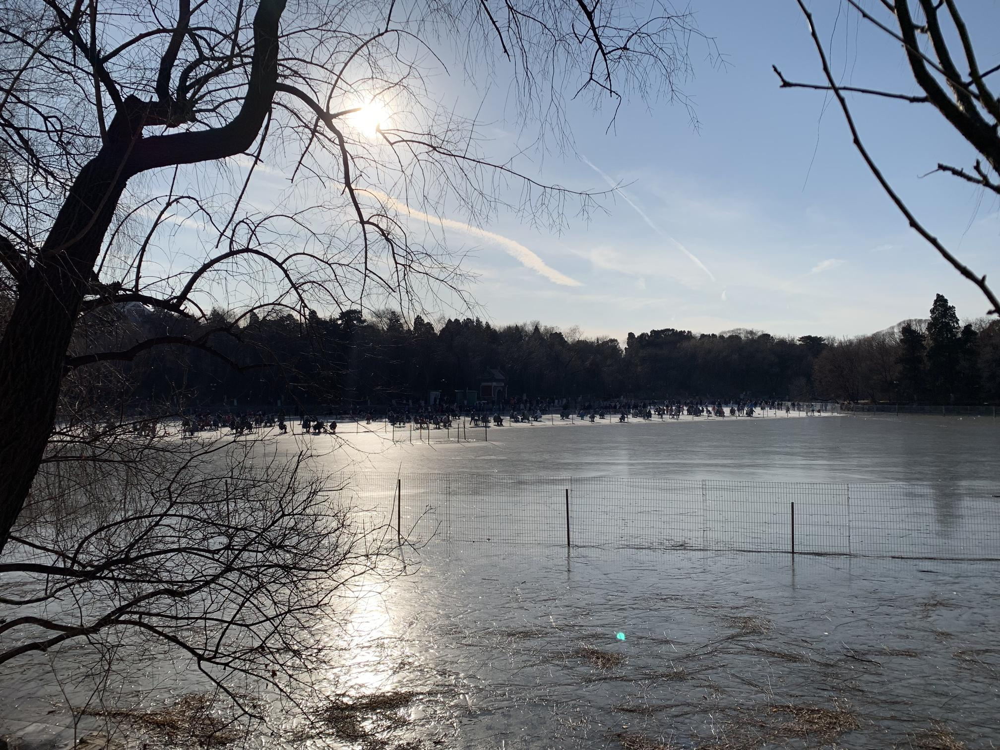午后暖暖的阳光和结冰的未名湖
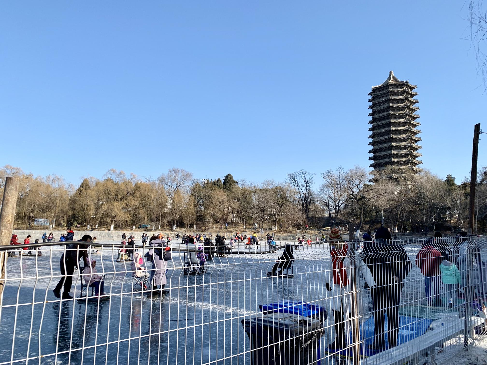欢声笑语的未名湖溜冰场
大概是出于射手座体质，我并没有坐上雪橇，也没有用小凳子撑着走，只想体验一波真正的溜冰，于是走上了人少的片场。金总说：不要怂，就是干！前些日子在深圳星河CoCo商场看到了一些小孩子滑得非常顺溜，老夫当然很是不服输。我很淡定地穿上了溜冰鞋，跟金总谈笑风生，明晃晃的冰刃从指甲尖划过，说实话有点怂了。在金总的帮助下，我成功地站立起来，并且通过相互作用力往后甩手，人果然就往前运动了（开玩笑）。慢慢摸索之后，便真的会玩了，一圈一圈地兜着走。在现场看到一些小孩带着笨拙的大人，一些大人带着胆小的孩子，还有一位老爷爷在冰上玩着曲棍球，鞋子上的刃都比我的长一倍，我觉得大概可以用“专业”来形容！由于冰面千疮百孔，密密麻麻的或深或浅的刻痕给我带来了新年第一吻。正待得意之时，金总开启了录像功能，我越滑越快，满有武大靖的风范，不巧鞋刃磕到了冰面上一个比较深的槽，直接摔趴下了，幸好未磕到牙，罪过罪过...
 |
 |
 |
 中午食宝街“窑啊窑”聚餐 |
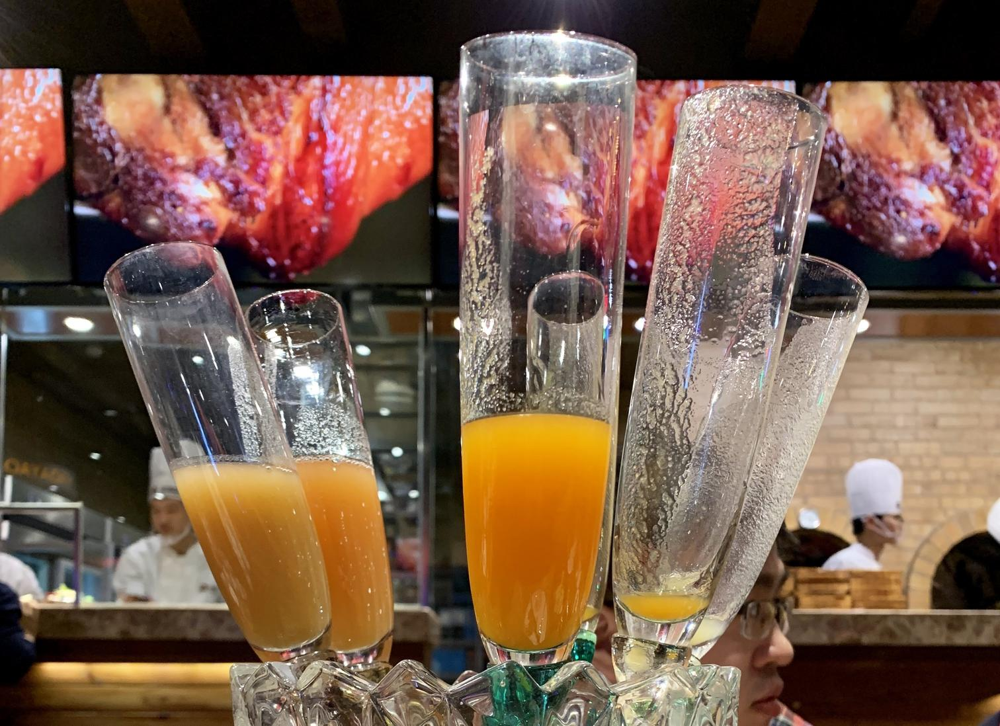 扔骰子赢了店家，获得花束饮料 |
刚入公司之时由于项目的特殊性，问题背景比较复杂，之前从未接触过此场景，同时需要接手上一任的代码（竟然未文档化），而且初次使用企业的实验环境，其并没有实验室的服务器方便，非常的痛苦。（当然，对于我这种拿来主义者，我很感谢此次实习给我一个很好的锻炼机会）好在项目时间较长，内心也没有非常急切，与同事慢慢探讨，一步步找坑。说实话，是稍微有点坑...此过程花了将近一个半月，只能怪自己比较弱。在公司比较惊喜的地方在于聚餐。每当组内有人事变动或者负责的业务有所提升的时候，就开始聚餐，刚过来正好赶上了好时候，人事变动不断，同时业绩稳步上升，聚餐几乎每周一次（简直太爽了！）但由于我的项目比较独立，而正式员工的工作也有一定的机密性，我与组内的同事并没有很深入的沟通，每次聚餐都会比较尴尬。听着同事讲北京学区房问题，结婚问题，给Sean哥介绍产品组小姐姐，哺乳期孩子生病问题，股票的涨跌，谁谁谁跳槽去了哪里，T3-3转到了T4等等，我只能默默地吃臭鲑鱼，久而久之，似乎开始能听懂一些并插上嘴了hhh
由于是快到年末了才入的职，顺利赶上了北京分部的AMS年会聚餐，不得不说，现场非常的奢靡。正式员工排队领iPad，同时年会抽奖分发现金红包，dyson吹风机，Switch，iPhone X等玩意儿。桌上的菜被斯文地动了一些，大家的心都在悬在大银屏的摇号机上。几家欢喜几家酸，六轮摇号结束，十一分饱的我异常淡定，PD哥便搬出了一套大理论：饭桌上的座位是有讲究的，坐在一起的人都会有共同的特点！你看我们这边半圈人都没中奖，剩下半圈都中奖了，来Z，换个位置！（稍加思索，在座的各位人手一套四环内的三居室，就我和旁边的JW不曾拥有，讲来还是很有道理的）听说VK姐来了三年了，从没抽到过奖（中奖率30%），在大家调侃声中，刚结婚的VK姐似乎眼泪汪汪，我觉得现在跳槽还有机会：），去其他公司再抽一波。被各大领导挨个敬酒的感觉还是非常紧张的，跟着同事一起social一波：“老板好，老板新年快乐！”（老板你是谁呀，我要见Pony）
| 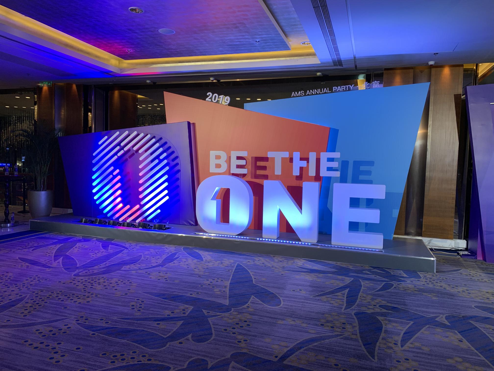 晚宴会场大厅 |
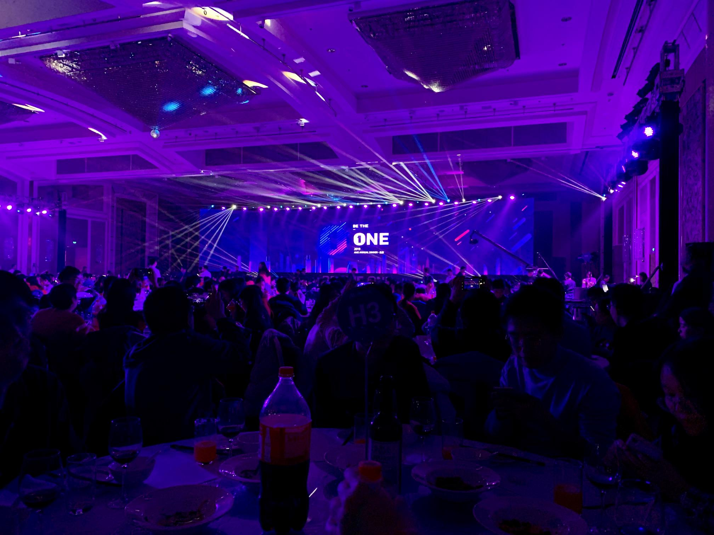 精美的开场秀 |
 产品组小姐姐的歌唱与舞蹈（一） |
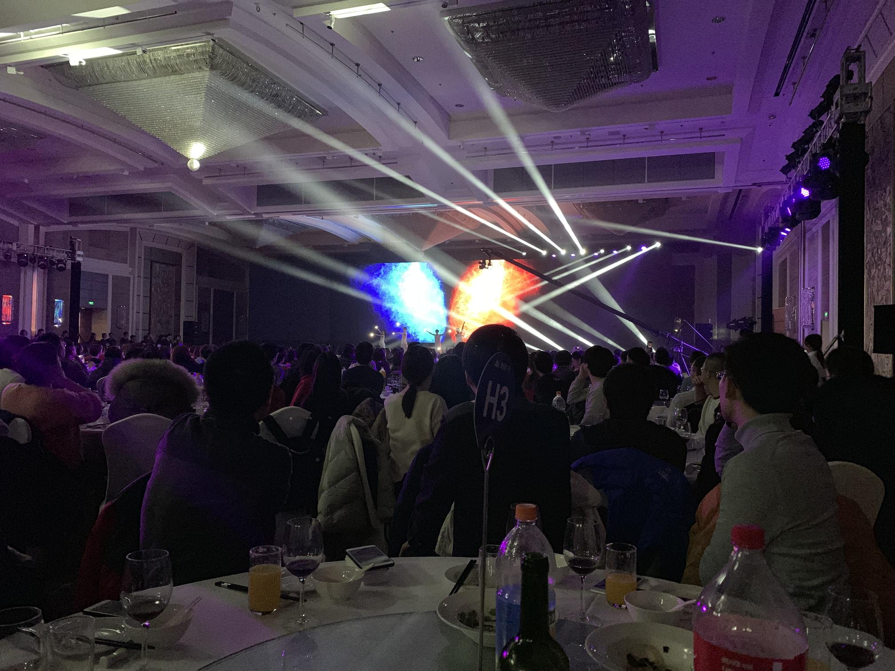 产品组小姐姐的歌唱与舞蹈（二） |
当然了，一个人会有倒霉，总也会有运气爆棚之时。幸运的我在跑实验时，抽到了一张北分晚会门票，激动地像一个128斤胖子。
 中奖 |
 门票 |
 地球人与大黄蜂的第一次握手 |
晚会的地点在国家网球中心，做公司大巴兜兜转转，途经中央电视台，绕北京城开了很久很久。毕竟第一次参加那么“高大上”的晚会，即使有点晕车也不遗憾了。（记得路上ly发消息说UIUC出了第一批offer，心态有点崩）到了会场中心，期待高过失落，一下子就被治愈了！

国家网球中心-钻石球场
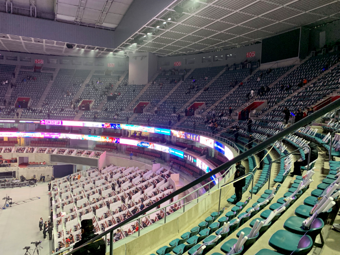内置（感觉座位非常的...陡峭）
不得不说，老东家还是非常给力的，请到了大张伟《棒棒糖》，《一人之下》主题曲演唱者王朝，菊姐，刘人语等（腾讯视频牛逼，希格玛牛逼！）我觉得程序员们的品味跟一般观众还是不太一样的。大张伟一人尬演，心疼+1s，完全没有掌声；王朝小哥哥的服装是相当的有侠客气息；在看小姐姐的时候，大家是一样的！101两位代表出台时，还是引来了不少的掌声和呼声，特别是菊姐！下方还有一段101小姐姐教明星员工跳舞的视频23333,当时主持人问其中一位大哥感觉怎么样，大哥憋了半天没憋出话来，主持人又问刘人语小姐姐好看吗，大哥羞涩地点点头，（回去怕不是要跪搓衣板了），早知道有今天这种神奇的桥段，大哥可能就故意拉低去年KPI了23333。


帝都的商场是意料之中的气派！（海淀区的西单，欧美汇，五道口等，朝阳区的王府井，三里屯等...个人感觉三里屯太古里那个方向是最精致的）
 西单商城 |
 法国兰蔻专卖店 |
就像之前去深圳，走一圈深圳大学，清北哈工大研究生院，北大汇丰，法学院等，来北京之初，出于各种原因，走了一圈北京的高校。突然发现清华校徽周围一圈麦穗跟UIUC的一毛一样，查阅了资料才发现，是由于1906年，UIUC校长致信美国总统罗斯福，建议将庚子赔款用于发展中国的教育事业，于是这笔钱就用于建立了清华大学。
 北大真的挺小的 |
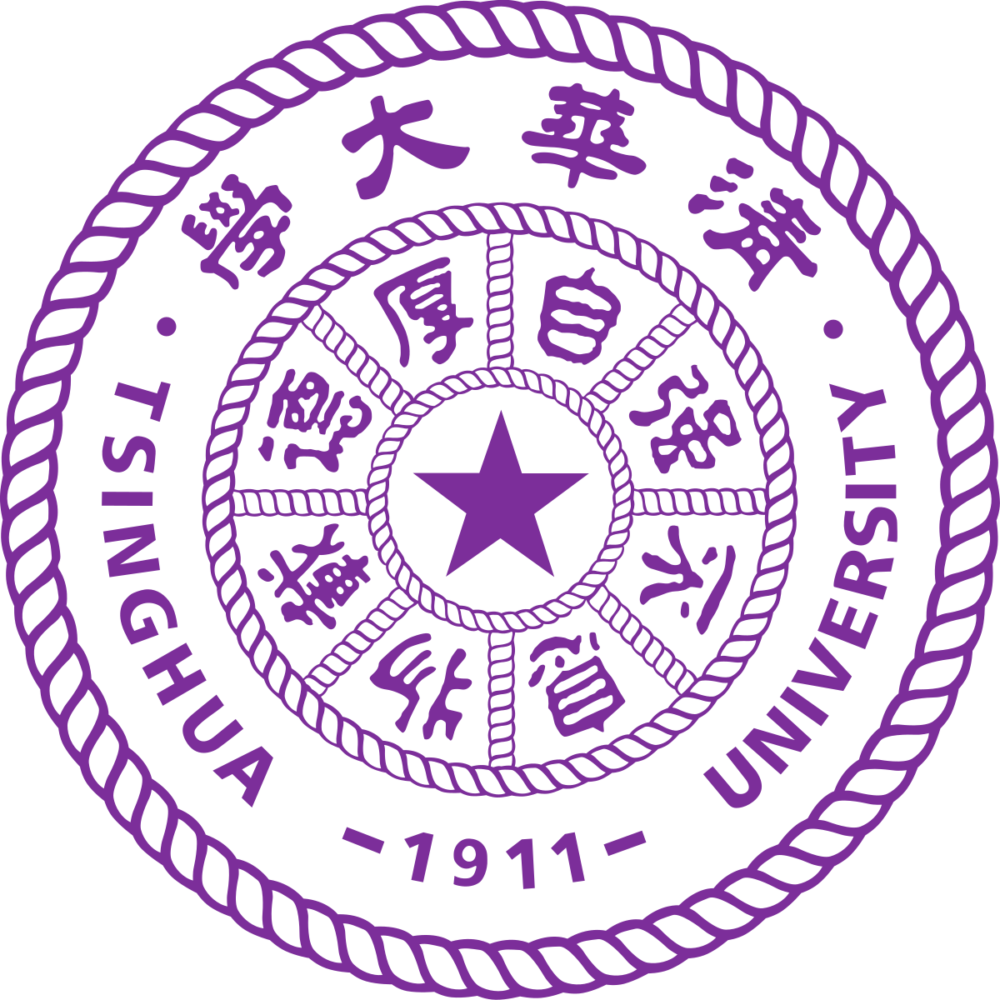 介于四环与五环之间的高富帅 |
 人大的女生是真的多，当时碰巧去参加了一个计算机考试， |
 北航挺有工科气质的hh，强推校内的航空博物馆，。但是卖给我坏掉的飞机模型让我跑了好几趟换货是不应该的！ |
每个人都有不同的习惯，我是一个很容易对新环境产生好感的人，北京带给我的新鲜感让我享受到了诸多的欢乐。与清北老同学的聚餐，享受鹅厂福利，拥有自己的设备，京沪之间频繁的旅途（期间回上海多次），同事们都是顶尖985的硕博，打卡“北上广深”之首等等，这一切都让我有了一种膨胀的错觉:( 事实证明，too young, too simple, sometimes naive!
水土不服
起起伏伏大概是人生的本质。经过近两年的总结，于我个人而言，我发现当我出于人生的高峰时，在不久的将来，必然会从高出摔下去，或许不止一次（想起在悼念居里夫人时，爱因斯坦说的那一席话，稳稳地扣三个响头），从极度自信甚至自负到后悔遗憾，焦虑只需要那么几天；而在人生的低谷时，我以为按照能量守恒原理，会迎来一次突然的转机，可那往往是不存在的，需要积累，经年累月！而且得有能量的输入呀！好吧，没那么严重，真的是因为北京太干了（或许是回上海太多次了，起初没感觉出来），过了一段安稳日子后，渐渐地有了一种水土不服的感觉...
我放过了自己。项目坑就坑吧，认真做，做不出来就算了（尽力而为）；每天早晨起来喉咙疼也没办法，睡前床头一盆水，床尾一盆水，擦擦橄榄油护手霜（每天不戴手套撸铁，还涂护手霜的是不是有点神经病...）。之后开始关注了Youtube上影评，书评的博主，还有一些有趣的讲中外文化差别和留学生活的博主，感觉还挺有意思。周六周日也不再按时来公司了（真的觉得欧美“佛系”的工作schedule还是挺可持续的，当投入大量extra时间只为感动自己时，这一切努力已经没有了意义。每天都是一个作息，我甚至一度失去了星期的概念，直到有一天周五中午同事们high了起来，开始消极怠工，我问发生了什么，他们说马上就是周六周日了呀？！），顿悟的我决定探寻小学课本里的北京。
国家博物馆不错的，进门需要差身份证，免费。里面很多展品都是复制品？不是很懂正品为何不开展。见到了四羊方尊，青铜面具等之前课本中介绍过的国宝，有一些并没有找到，听说是在故宫博物馆（之后也去了，感觉国宝更少）。

国家博物馆，国宝“金缕衣”，劝君莫惜金缕衣，劝君惜取少年时。（劝Trump赶紧给我发签证，别check了，求你了）
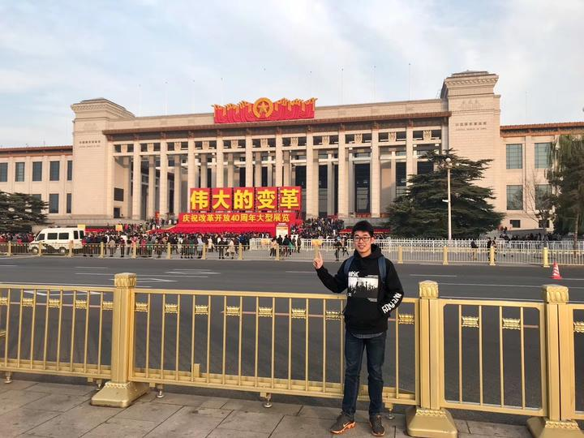与CCC总工程师视察天安门广场
来北京之前，我可能对长城有一些误解。原来长城是分为好几段，有几个不同的景区：八达岭，居庸关，水关，慕田峪等等。其中最著名的是八达岭长城段，也是游客最多的一个区域，听室友说第一眼能给人一种震撼的感觉！好，那我们就去比较陡峭的居庸关，听说那里外国人最多，一个台阶有50cm...
 北京小分队长城下合影 |
 北京小分队长城上合影 |
| 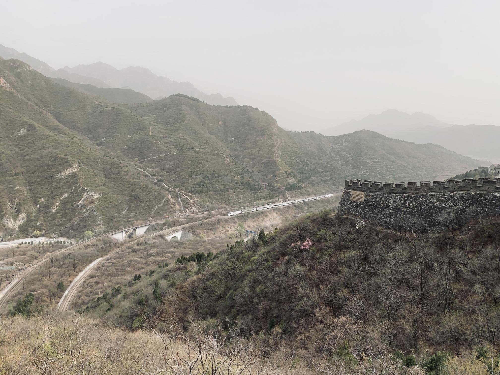 飞飞同学说这一张最像上一版人名币10元的中的背景 |
 私以为这一张很能体现居庸关的陡峭，中间真的有那么几次，我体会到了那种前路艰难，但是决不可回头的感觉，建造长城的人啊，真的很伟大！ |
| 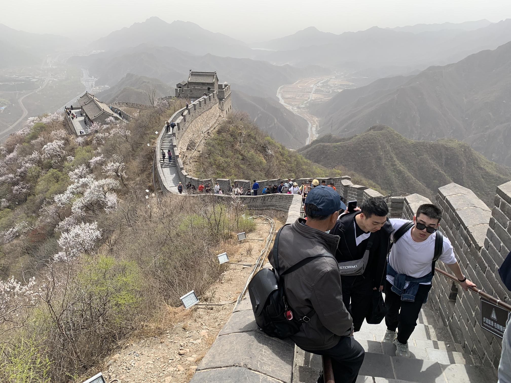 上了贼船，想回头难啊... |
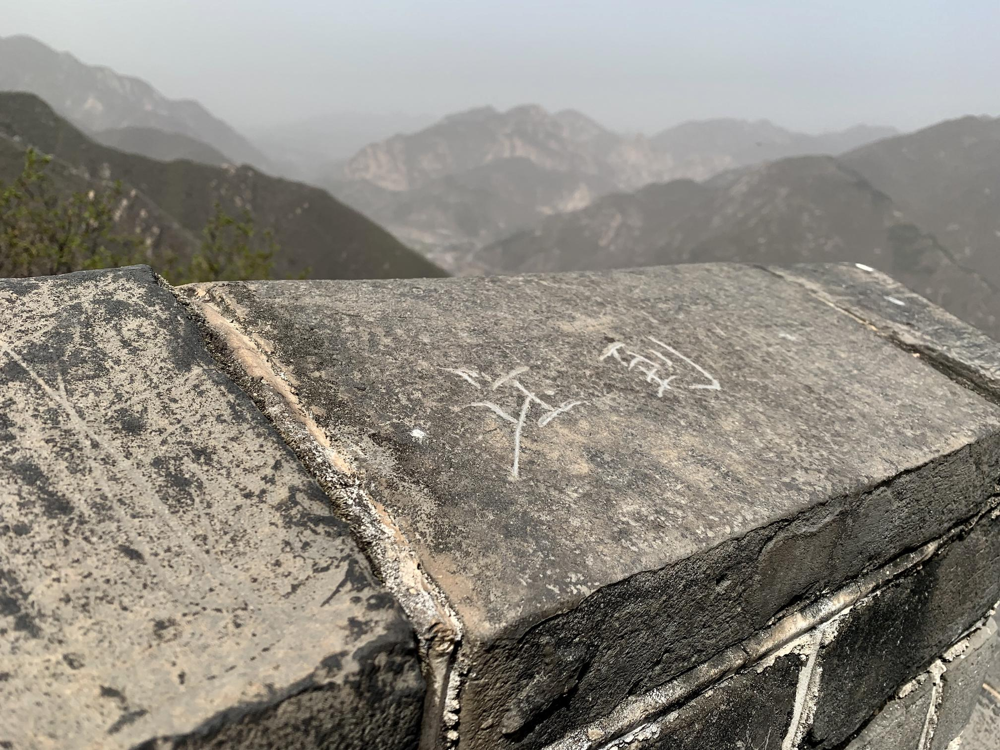 偶遇学长，能量+1 |
我也是走过深圳“南山南”和北京“北海北”的人了！夜晚与友人吃完涮羊肉，漫步北海之滨，聊天之中才发现后海，北海，什刹海都是连在一起的，只不过是分为不同的段。我觉得路灯下的北京小街小巷很有感觉，映照着对岸的华灯。沿路的小货摊摆放了很多有趣的玩意儿，大妈操着一口北京腔（果然是在内环！），我买了一个针织小猪，打算送人（可惜没有送出去/摊手）。
 这附近真的有很多好玩的地方，正宗的北京！ |
 夜灯下的什刹海 |
记得沿途xq说请我们吃北京老酸奶解解涮羊肉之味，最后没找到店家。于是之后很长一段时间，我走遍了便利店（FamilyMart，便利蜂，Seven-Eleven，罗森等）和租房附近的超市商场，尝了一边所有的酸奶...才感觉到，酸奶的口味其实也不一样，喝了20年的酸奶竟然这个时候才能品出区别！此处只放2个。
 |
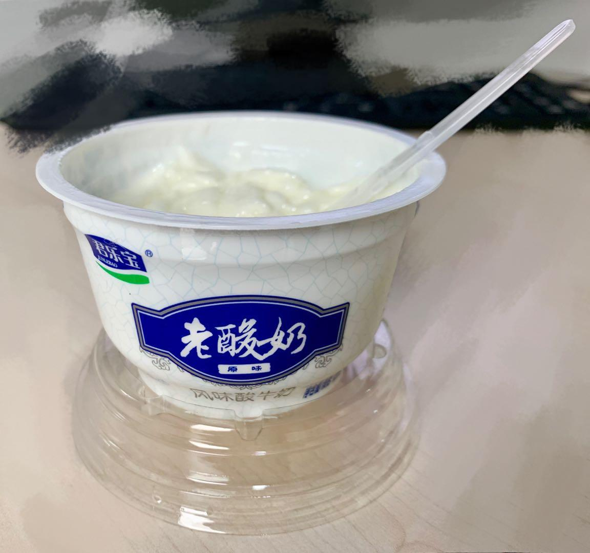 |
圆明园可以说是北京最响当当的景点了，至少我来之前是这么认为的！但是，如果提供学生卡，门票价5元...我花了2小时游览了一圈，发现并没有自己想象中的那么有沧桑和沉淀！（可能我只是个俗人，历史课本上的耻辱已经忘得一干二净了）其实我只是想看看断壁残垣的遗址，实际上这个建筑还挺小的，据我估计高大约2-3米，对我完全没有震慑力。而且游客挺多的，大家围着走一圈，那种感觉就没了。

图片盗自“圆明园遗址公园”，这是3月份圆明园摄影展的第一名。说来羞愧，这一届摄影展我也参投稿了，可是被rej了，哭泣T^T
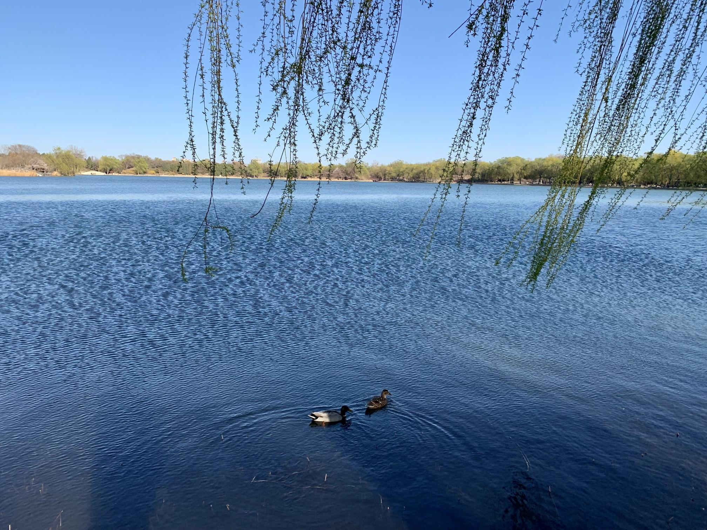本人拍的鸳鸯

本人拍的梅花一

本人拍的梅花二。当时还给这三个照片取了几个骚气的名字：“一朵寒风露”，“一朵寒风露2”, “碧波垂柳，逐水鸳鸯”
颐和园紧邻圆明园，也是相当著名的景点了，还被北京很多同学安利过，那是非去不可！由于之前去圆明园时，是因为被室友感染了乙型流感，因此周三专门请假在家休息，又觉得家里病毒可能比较多...就跑到圆明园去吸天地之精华，收日月之光辉了，因此人没有很多。这次来颐和园是周六，可谓人山人海。颐和园比较适合慢慢走，慢慢看，有一种小资的情调。由于当时心情不是很好，因此就走马观花般绕着湖暴走！一天40000步！此处很想吟诗：
水是眼波痕
山是眉峰聚
欲问行人去那边
眉眼盈盈处
才使送春归
又送君归去
若到江南赶上春
千万和春住

颐和园的风景真没得说

此桥异常地拱，在这附近4G信号特别好，印象深刻...

十七孔桥一直通往湖心小岛，据说国家领导人经常在这里开秘密会议
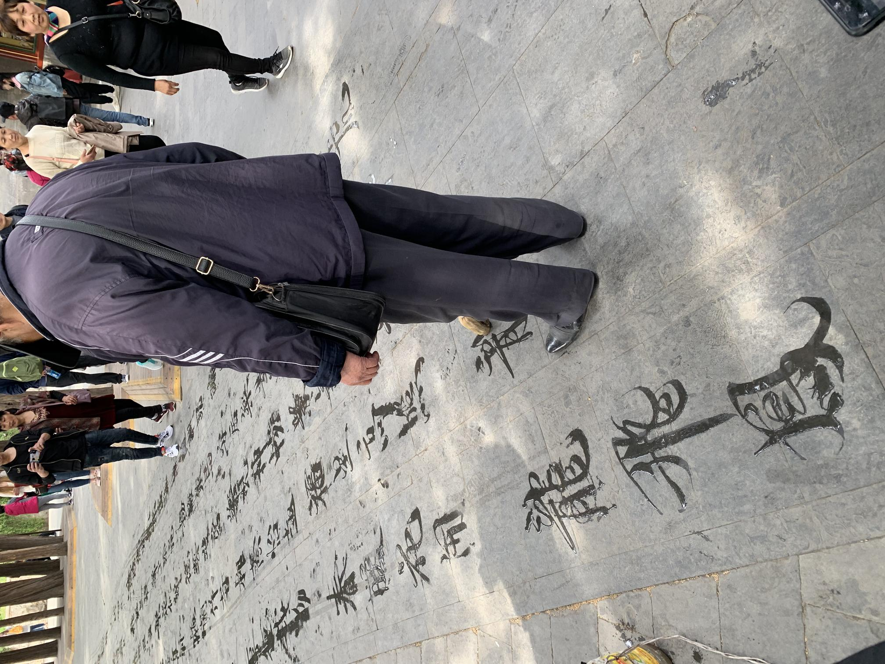文艺老人家，边听京剧边写书法
（听说DH哥在国家图书馆附近有房，国家图书馆岂不是成了他的小书房，羡慕至极）国家图书馆也是很气派，台阶非常多！员工的态度都不敢恭维，与大使馆的中国员工有的一拼。在这里我认识了P兄，是在找存包处认识的...（这边真的是高档，找个存包处得走好远）P兄是个山东大汉，来北京工作快2年了，近日辞职打算自学Java创业（牛！）我俩相见如故，在图书馆看了一会儿书就跑欧美汇约饭了！
P兄在路上花30买了个幸运盒（头一次见这种玩意儿），打开一看是个粉色的口红，当场汗颜，淘宝一看便宜价50，他随手甩上了咸鱼49.5（233333）。我俩来到大盘鸡，P兄点了3瓶啤酒，我跟服务员说加一个酸梅汁，他一看就皱起了眉头，就差说出一个怂字（山东大汉果然气度不凡！）大口吃肉之际，P兄跟我描述了他的短期和长期创业计划，虽然听来非常的naive，但是觉得他态度非常坚决，很有信念，值得心生敬佩。我泼了一盆冷水：你有人脉吗，如果失败了怎么办，还会继续？他答道：譬如足球，总有个守门员在那里，难道不踢了吗？我想这句话也解答了我的一些疑问，破天荒倒了一杯啤酒，敬P兄，祝你顺利！（如果你没有成功到出现在媒体上的话，大概就此别过；如果真的成功到出现在媒体上的话，行吧，还是就此别过）
国家图书馆正门

国家图书馆内景
故宫！故宫博物院呀！故宫的旅游应该是做得最成熟的，一进门就可以租到自助讲解器（各种语言版本，各类风格的讲解），背面还有故宫地图，很赞，这是我第二次使用这种高效的玩意儿。（第一次是在意大利都灵的埃及博物馆，不过人家是免费的，资本主义好！）
天公不作美，当天竟然下雨了！我戴着帽子，若无其事地走过一个又一个宫殿，耳中听着关于此地的一个又一个小故事，嘴里嚼着牛肉干（每一处垃圾桶便是我的救星）。这里倒真有一种朝圣的感觉，特别是在雨天，感觉很肃穆，我大概是被精致的廊沿，屋顶和气派的大堂给震惊到了。
不说了，记得这是劳动节，下午浑身湿透的我还是回到了公司赶paper，说好的三倍工资呢！！！
 本来我以为是狗，想了想，皇帝怎么会用狗呢...对不起，狮子一 |
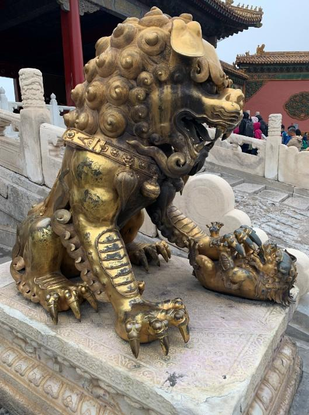 狮子二，这俩狮子一左一右还是有点喜感。这个狮子按着一只（乍一看以为是蛤蟆）小狮子，不知道是何寓意 |
宁寿宫外的九龙壁非常气派，九条龙形态各异

这是故宫该有的样子，真的很庄严
故宫背后是慈禧太后的御花园，奇花异木，真是奢靡。

一进门就看到了这个树。两颗树的枝芽经过几十年的演化，最后长到了一起，挺有意思的
所说的水土不服其实慢慢也就习惯了。真正地跟着小学课本游览了北京，把一直藏在心底的愿望实现了一遍，也认识了很多人。日子依然是不温不火，那就继续去探索！
心如止水
其实在北京这边，每天能够交流，说得上话的人特别少，应该只有室友（实习同事）J一人。J其实也担负着巨大的压力，连续赶paper，做PPT，跑实验等，有时候每天只跟他说一句话：J，起床了！然后一起匆匆忙忙下楼，他路上喜欢戴耳机听东西（大概是音乐），几次沟通下来让我觉得，算了，我也带耳机吧。于是喜马拉雅的早间新闻台我连续听了几个月...到了公司，同事们开始内部会议，虽然我也在list上，但似乎不必（或者他们也不想让我）参加，之后就是长达一天的办公。看着同事们一起讨论一个bug，或者某个曲线时，我还是很羡慕的，希望自己也能参与其中。（然而我不懂，也不需要懂，我在做的东西他们也不懂，也不需要懂...）我和J的沟通倒是还不错，特别是在刚开始项目的时候，之后两人各有自己的事要忙，沟通也没有那么频繁了。由于坐在角落，与同事的日常也就是单调的：VK早呀！嗯！PD你来了呀！是。
我最喜欢的时光是每天8点以后（7点公司统一晚饭，之后7：30大家就陆续离开了），我大约是在工位上磨蹭到8点半，然后跑去另一幢楼的健身房！运动真的能给人带来快乐（激素超厉害），健身跑步热身20分钟，然后去里面撸铁。一来一去发现在健身房看到的经常是一些熟面孔，大家也都心照不宣，进来时点点头，真成了传说中的点头之交。偶尔会因为哪个设备出问题了侃一侃，或者询问一下正确的使用方法，又偶尔觉得人家的姿势比较厉害，让他帮忙指导一下。（40岁的油腻大叔都一身的健子肉，小年轻怎么轻易能认输！）9点半到10点，在走去中关村地铁站的路上买一瓶牛奶（地铁站门口的天天易家冰柜里的牛奶，从最下一排买到最上一排也是没谁了，生活如此多娇）或者一盒水果（果多美的水果都是常温的，在夜晚30度的北京该何处安放，差评），算是心如止水了。

健身房内景

一起运动的小伙伴们
找了个周末去逛了一趟三里屯和蓝色海湾！太精致了，强烈推荐！（手机不知道怎么回事，大部分照片竟然不见了）

三里屯！
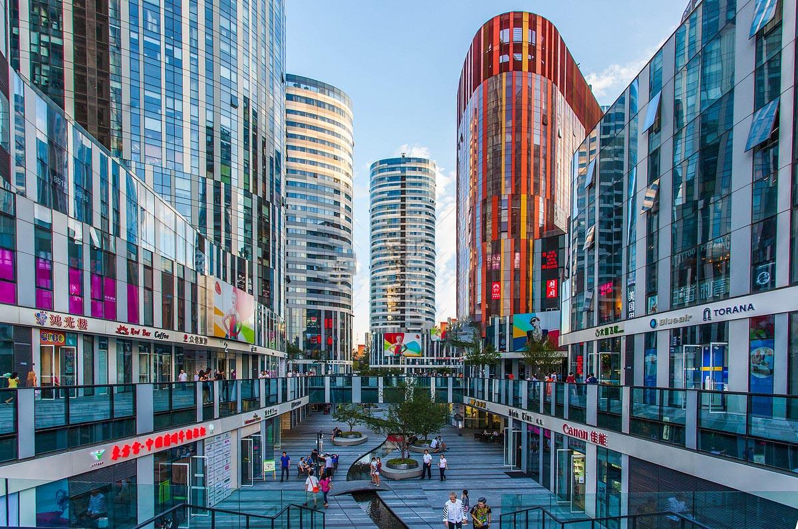为了弥补照片的丢失，从网上找了一张类似的，我拍的也有那么精致！
偶尔也会打卡网红书店，找个周末换换脑子。

三里屯附近“老书虫”，从外面看像是一个集装箱，进门感觉环境挺不错。（但是没有看出来为什么变成了网红书店）顾客没有很多，神奇的是书店里竟然有一个教堂。那天正好是礼拜天，在书店里找卫生间，一不小心推开一个房间，发现里边别有冬天，不下100个人（大部分为外国人）在安静地礼拜，小心翼翼地关上门，去别处寻找了。
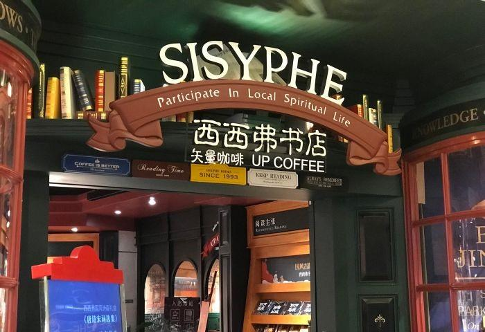西西弗斯书店坐落在蓝色海湾，充满小资情调。与其说这是一个书店，不如说书店是咖啡店的附属品。这家书店内部并无可坐之处（可能真的是店，不希望让我这样的顾客把它当成图书馆...）起初我翻开一本书，坐在了地上，店员见状，这还得了！就把我哄到一边，说不准坐在地上。于是我乖乖拿着书坐到了隔壁的咖啡店，点了一杯拿铁，仅啜一口便放在边上，当成免死金牌，度过了安闲的午后。从遍地的阳光，坐到夜灯缓缓升起，从窗外望去，晚上的蓝色海岸是很好看了。
由于看过《解忧杂货铺》和《嫌疑人X的献身》两部电影，对东野圭吾有了一些了解，在实习后半段闲散之时，便入手了一些他的其他作品。其中让我印象最深刻的莫过于《白夜行》了，唐泽雪穗的气质简直隔着纸张都能将我吸引住！（就像《平凡的世界》中的田晓霞，《围城》中的唐晓芙）我开始搜集各种影视资料，发现韩国翻拍过《白夜行》，其中的女演员是女神孙艺珍（虽然拍得挺烂），国内也有（即将有）一个类似的话剧，女演员为韩雪，也可以说是非常贴近人物形象了！《白夜行》的最后片段必须再现一下：
雪穗正沿扶梯上楼
她的背影犹如白色的影子
她一次都没有回头
 |
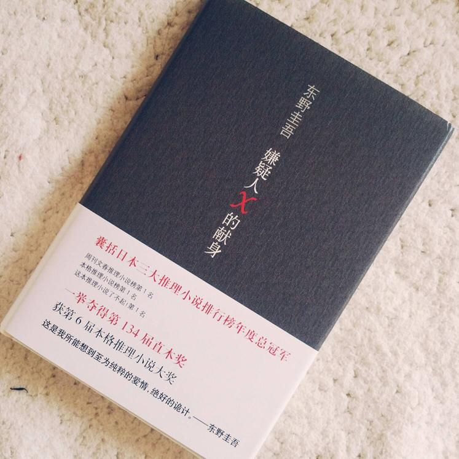 | 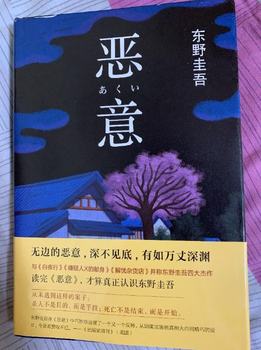 |
| 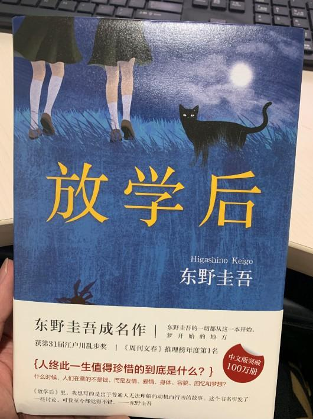 |  |
 |
每天茶余饭后也还是会看看剧...（少玩手机，多看作品）

当初回了一趟学校，被傻儿子带入坑，于是加班加点直接刷到了结束...

台剧，一共10集大概，介绍现代媒体和一些精神病杀人犯的处决争议，非常良心！

Love Death Robot, 动漫版《黑镜》
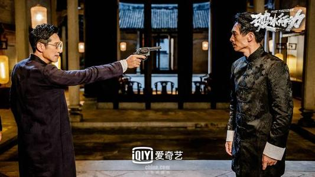《破冰行动》终究还是没有《人民的名义》拍得好，不过作为打发时间还是不错的。我特意选了东叔和辉叔作为封面，大爱！

《切尔诺贝利》真的是很好看，很真实，每一集都感觉再看美国的灾难大片。最后教授的庭上讲述让我印象深刻，以后作为研究者一定要向他学习，在Conference上用形象生动的语言将模型的原理阐述清楚，并且语言层层推进，无法反驳。其实最后一集是刚刚下午跟傻儿子一起看完的，我俩还一直在讨论反应堆的工作机理以及爆炸原因。
挥手告别
我是一个非常念旧的人，在一个地方呆很久，就会产生依恋。但是时间对每个人都是公平的，每一段旅程也总会有结尾，挥手告别六个月的“北漂”生活。想起高三毕业那会儿，谢老师曾说自己每年六月都会送走一批又一批高三学子，每一年都哭（突然意识到三天后的高考），我一直记着谢老师的一句话：指缝太宽，光阴太瘦。
我对银科的记忆，就是15楼靠窗的位置。在夏天，太阳的闷热可以在这里得到诠释，这大概是整个公司最热的工位；在冬天，帝都的严冬可以从此处感受，这大概是整个公司最寒冷的角落。但是从那个地方，可以俯瞰海淀区的高楼，可以观察夜晚11点，1点，3点，5点的忙碌的人们和城市。
 白天的银科大厦 |
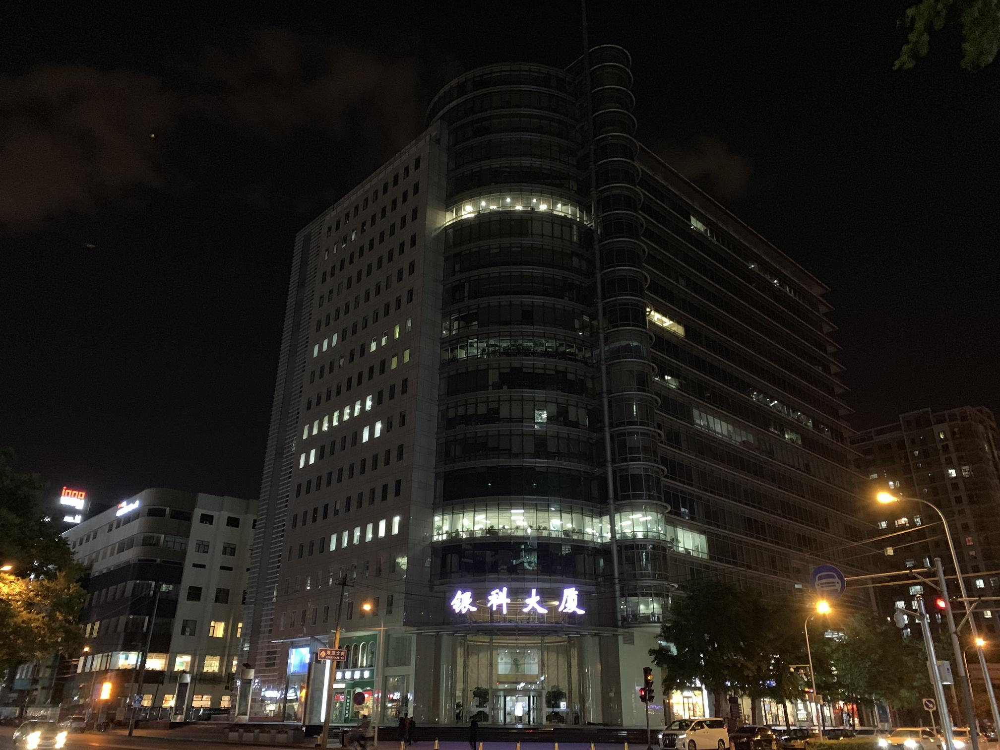 夜晚的银科大厦 |
| 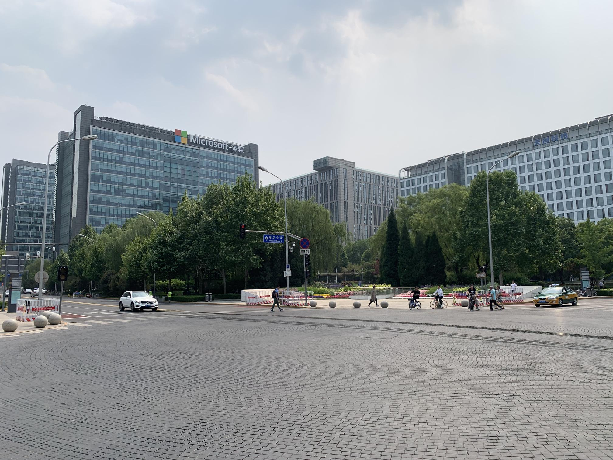 白天的MSRA |
 夜晚的MSRA |
 中关村中心，白天 |
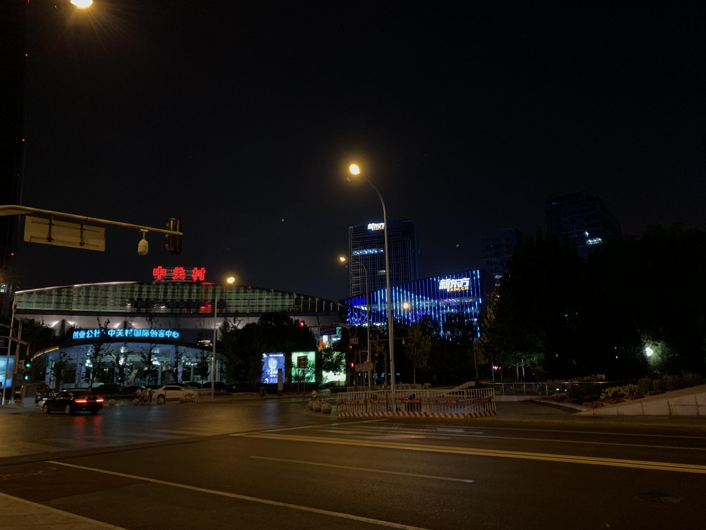 中关村中心，夜晚 |
从第三极健身房出门，往南直走，路过天天易家买水果牛奶，就可以看到中关村地铁站，途经海淀黄庄，到知春里，两站路，直行到中国海关大厦。往南经过一条小路，灯火辉煌，路上经常能够见到从字节跳动（ByteDance）公司下班的年轻员工，步行400米左右到家，家的附近是一个天桥。离职前一天，晚10点，我第一次走到那个桥上，看车来车往，从我身下经过。
| 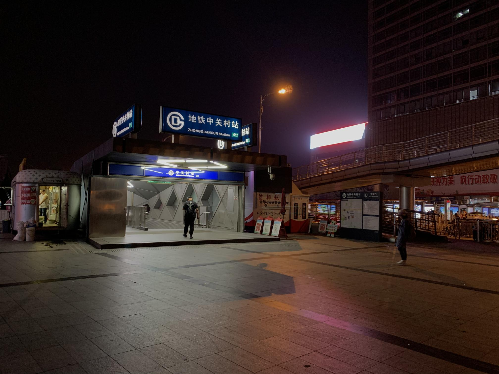 |  |
| 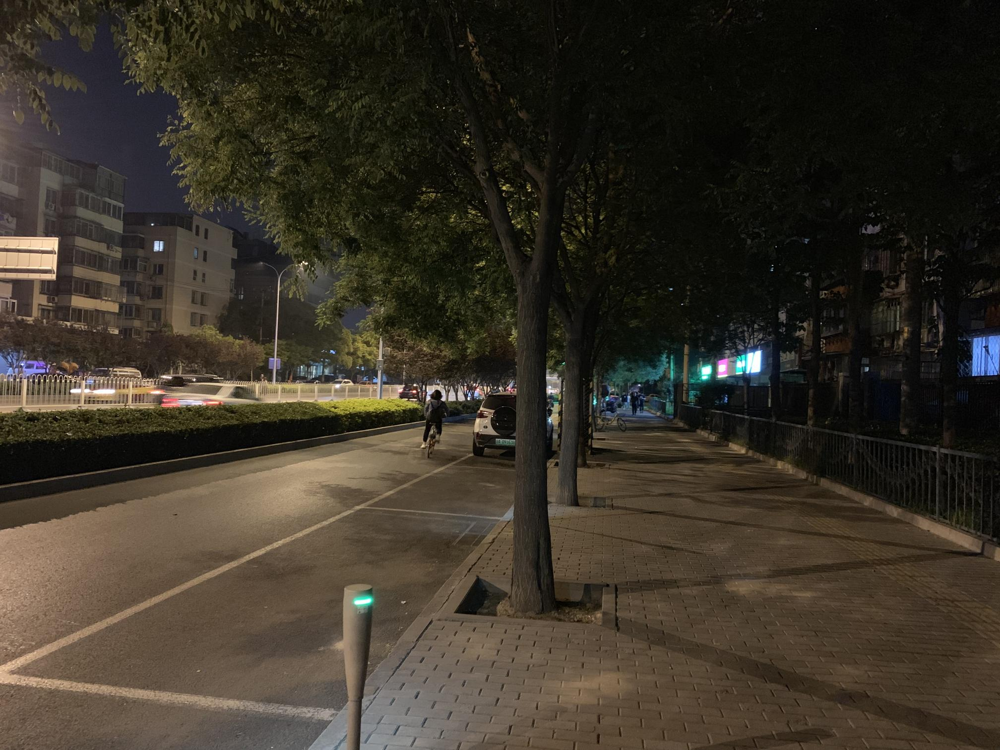 | 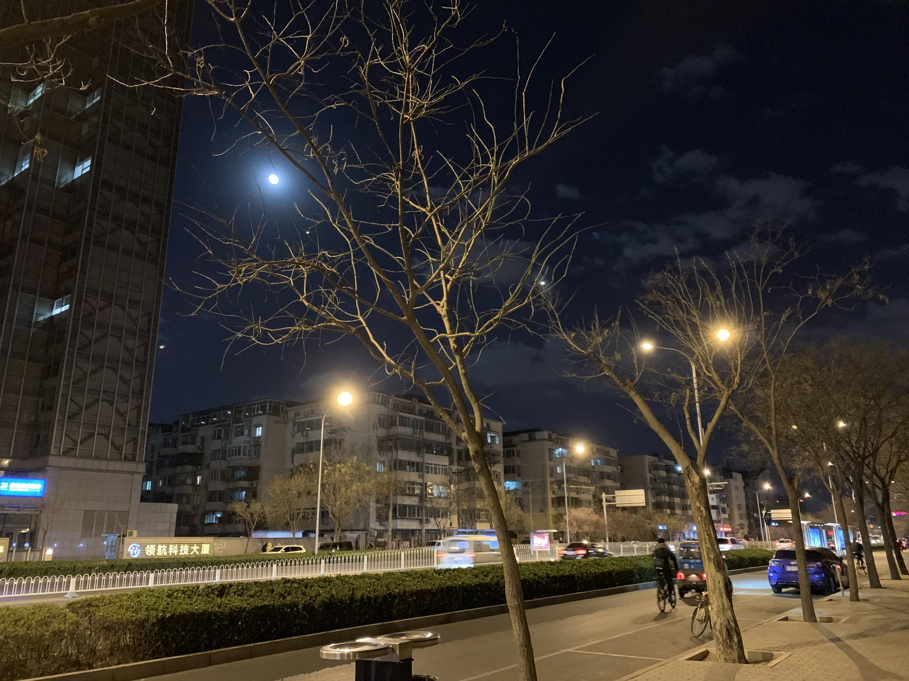 |
| 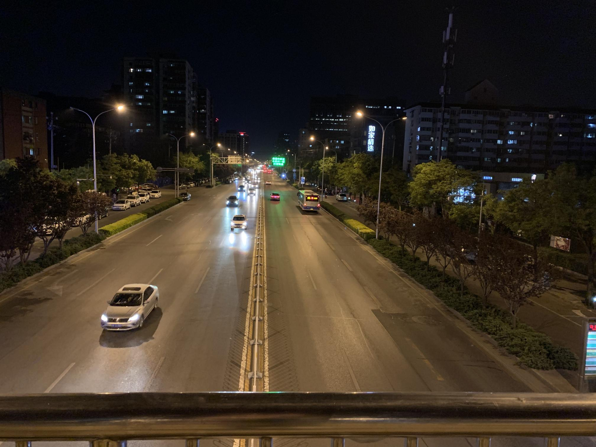 |  |
当初是因为有人要看我的照片，后来我觉得每段时间记录一下自己的变化也是一件挺有意义的事，于是就有了这五张自拍。（比较喜欢iPhone自带相机的质感，也比较喜欢公司厕所的环境与灯光！）证明了两点：1.互联网公司着装正如大家所想，是比较随意的；2.公司内部一年四季的温度比较恒定，导致码农们一直在温室内写代码，所以CS专业的真的得多运动呀。好好养生，正如总裁所说：保温杯里泡枸杞！
 2018.12 |
 2019.01 |
 2019.03 |
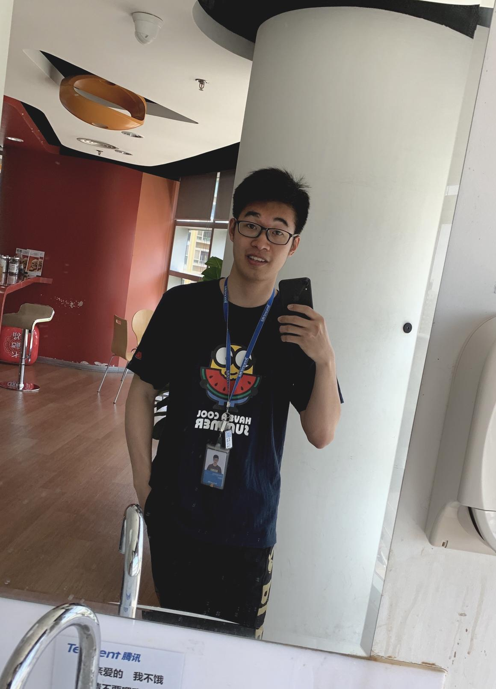 2019.05.01 |
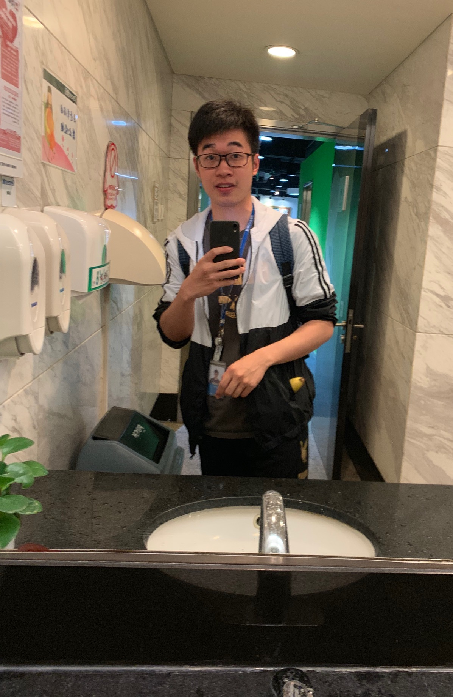 2019.05.28 |
附上北京恐怖的交通状况！
 晚上11点的海淀黄庄地铁站...（宛如下午5点的上海2号线？？？） |
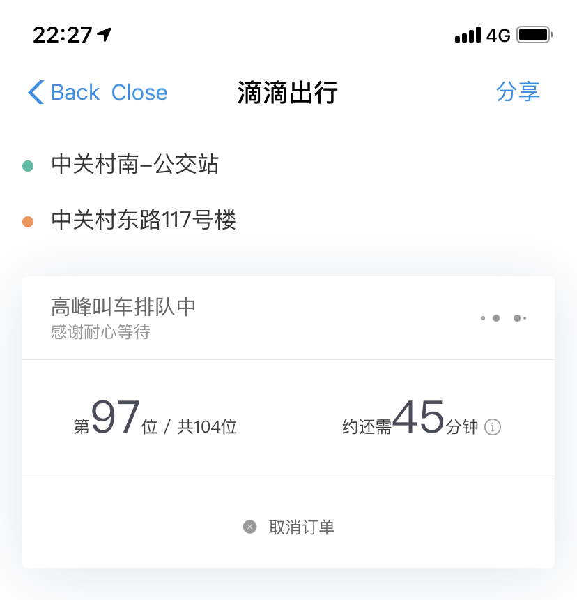 滴滴提示您：请勿出行 |
5月31日，我拿到实习证明，与小学弟约了最后一餐“小吊梨汤”，北京再见。